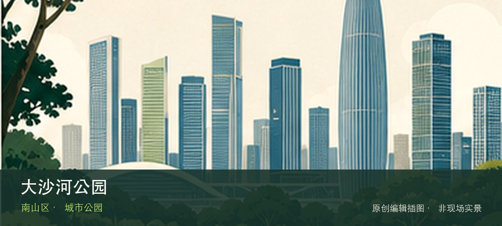

适合谁
适合亲子和自然教育，但体验高度依赖孩子体力、活动日与设施开放情况。

SHENZHEN GUIDE · 317
桃源街道北环大道8228号 · 城市公园
大沙河公园位于桃源街道北环大道8228号，塘朗山脚下的城市公园以起伏地形、中央绿茵坪、花镜与运动场地连接大沙河生态长廊，开阔草地适合野餐和放风筝，但与河岸长廊是两个不同的游览单元。与同类地点相比，最值得停下来的差异落在中央绿茵坪和西门花镜这两个具体节点上。带孩子到访时，可把中央绿茵坪与西门花镜转化为两项能够完成的观察任务，不必追求看完所有设施。活动、花期和设备开放受日期影响，先确认预约、遮阴、饮水与返程条件。
WHY GO
适合亲子和自然教育，但体验高度依赖孩子体力、活动日与设施开放情况。
先核对大沙河公园当天开放与入口，从中央绿茵坪开始；体力或时间不足时，在前往西门花镜之前结束，不临时追加陌生支线。
地铁7号线珠光站D口步行约1.3公里，或乘公交到大沙河公园站、松坪山站；先确认从西门、南门还是东门进入。
可导航大沙河公园停车场，东门和南门均有停车入口但车位有限；园内体育中心官方资料列有300余个免费泊位，活动日仍应以现场开放和余位为准，满位后改停周边正规商业停车场。
10月至次年4月更适合草坪停留；春季看花镜，夏季树荫仍有闷热感，午后防雷雨，草地积水或养护围挡时不强行进入。
NEARBY IDEAS
 授权实景图
授权实景图
深圳湾公园位于后海至蛇口约十三公里海岸，十四个主题园与连续滨海慢行道跨越很长岸线，观鸟、骑行和看城市天际线应按分段选择而非一次走完。若只匆匆经过容易错过重点，福田红树林邻近观鸟段与深圳湾大桥与潮滩视野恰好构成最有辨识度的观察顺序。海岸体验取决于福田红树林邻近观鸟段与深圳湾大桥与潮滩视野当天的风浪、潮位和运营边界，不宜把旧照片当成实时承诺。先确定安全退路和返程节点，遇雷雨、台风影响或封闭提示就缩短行程。
 授权实景图
授权实景图
深圳人才公园位于后海深圳湾畔，桥梁、人才主题公共艺术、湖面和高密度总部区夜景构成鲜明城市舞台，与长线深圳湾公园的自然观察侧重不同。与同类地点相比，最值得停下来的差异落在人才星光桥和人才主题公共艺术这两个具体节点上。游览重点是人才星光桥与人才主题公共艺术如何组织城市公共生活，可按同行者体力随时缩短。先确认最想看的节点，再把树荫、休息点、活动占用和雨天退出位置纳入路线。
 授权实景图
授权实景图
前海石公园位于前海前湾二路，前海石、开阔草坪和雨水花园共同记录新区建设，景观重点是人工海岸、生态排水与城市开发之间的关系。先辨认前海石城市记忆，再观察雨水花园，两者共同说明这里为何不能被同类地点的泛化标签替代。游览重点是前海石城市记忆与雨水花园如何组织城市公共生活，可按同行者体力随时缩短。先确认最想看的节点，再把树荫、休息点、活动占用和雨天退出位置纳入路线。